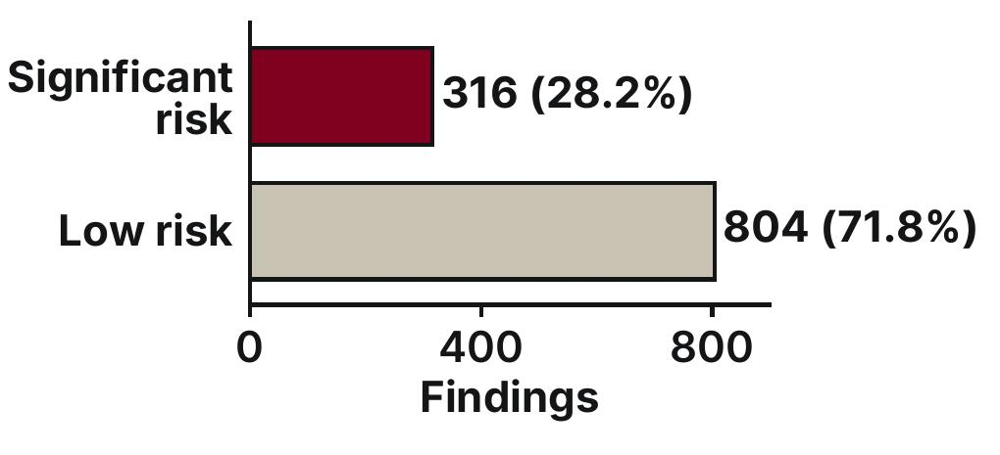

Do frontier AI developers
act on third-party risk findings?
Analyzing publicly available evidence of company responses to evaluations
Government AI institutes and independent evaluators test advanced systems for dangerous capabilities, safeguard failures and other risks. Yet identifying a risk is not the same as reducing it. This dataset asks a narrow question: when an evaluator publishes a risk-relevant finding about a named frontier system, does the public record document action attributed to that finding and directed at mitigating the identified risk?
Who was evaluated, and by whom
Rankings of the companies, models, evaluators and risk areas in the dataset, drawn live from the data. Hover a bar for its exact count.
Key findings
Six results from the significant-risk findings a named company could answer for. A response fell short when it was weaker than the risk called for, or when there was no response at all. Hover any bar or point for its exact count.
Findings published after a model's release mostly got no response: , against for findings shared before release
How to read it: each bar is all the significant-risk findings from one stage of access, split by how the company responded. When evaluators tested a model before release, companies almost always answered ( findings). When the evaluation came after release, most findings went unanswered ( findings). Pre-release access is granted by the company, so this is something policy can change.
Responses have not clearly improved: of findings fell short
How to read it: the solid line is the share of each year's significant-risk findings where the response fell short. The dashed line is the share with no response at all. The latest year looks better partly because those findings are recent and companies have had less time to respond.
The shortfall appears in every major risk area, from to
How to read it: each bar is one risk area's findings, split by how the company responded. Share where the response fell short: . The gap is not caused by one research topic. This chart covers all trackable findings, and a finding can sit in more than one area.
Government institutes are ignored less often than independent evaluators ( against with no response), but most responses to both fall short
How to read it: each bar splits one evaluator type's significant-risk findings into no response, under-response and proportionate. Responses fell short for of government-institute findings and of third-party findings.
Only of findings led to binding government action
How to read it: each bar counts trackable findings by the strongest official policy record that cites them. were cited in non-binding records such as reports or hearings, and were not cited at all. Government follow-up is counted separately and never stands in for a company response.
When companies do respond, responses name the evaluator's finding
How to read it: the first two bars are findings that drew a company response, split by whether the company explicitly tied it to the finding. The third bar is findings with no response. A response only counts as proportionate when it is explicitly attributed.
What happens to a published finding
Every published finding, narrowed to the ones a company owes an answer for.
Table view
Was the company response proportionate to the risk identified?
Two questions are coded separately for every trackable finding, then combined by a fixed rule.
Every trackable evaluation finding (one a named company could answer for) gets one verdict: proportionality. It combines two separately coded variables: the finding's severity (significant-risk or low-risk) and the company's Action Level (Substantive, Partial, Acknowledged or None).
Each is coded on its own, so neither can colour the other. They are then combined by a fixed rule: a significant-risk finding counts as proportionate only if the response was Substantive; a low-risk finding needs only a Partial one. In both cases the response must be explicitly attributed to the finding. An acknowledgement without action never meets the standard, and a finding with no located response is always an accountability gap.
Proportionate does not mean the response was implemented, that it worked, or that the risk was removed. It means only that a documented response met the bar the finding's severity sets.
How serious is the finding?
Each finding is scored against eight dangerous-capability domains by three independent models (Claude Sonnet 5, GPT-5.5 and Gemini 3.1) using one frozen prompt sent to all three. Each model returns its own category, and the one that at least two of the three agree on is the majority vote, which is then human-reviewed to give the finding's final severity. Using three models rather than one means a single model's misreading cannot decide a case on its own.
- Category 1
- Significant risk. At least one of the eight domains is demonstrated: CBRN uplift · cyber operations · autonomy and self-replication · persuasion at scale · deceptive alignment · safeguard failure · evaluation integrity · acute individual harm.
- Category 2
- Low-risk. Everything else: reassuring nulls, capability gaps, methodology contributions, governance observations, non-frontier models.
What did the company publish?
Three separate searches are run for every finding: company response, policy uptake and public coverage. Only the company's own primary document counts. News reporting that quotes a company is not a response, and standing policy that shares a topic does not count.
- Substantive
- A specific, documented change, attributed to the finding.
- Partial
- A change claimed but not verifiable, or incomplete.
- Acknowledged
- The finding is referenced, but no action follows.
- None
- No publicly documented company response was located.
The proportionality matrix
The same company behaviour scores differently depending on what it was answering.
Severity × company response
Every trackable evaluation finding, placed by how serious it is and what the company published. Hover a cell for its breakdown.
The same findings as verdicts
The matrix collapsed into the three outcomes, split by severity.
How to read the matrix
Rows are severity. The upper row is Category 1, significant risk: the finding demonstrated one of the eight dangerous-capability domains. The lower row is Category 2, low-risk: real, verified findings that crossed no danger threshold.
Columns are action level, the strongest thing the company published, left to right from Substantive (a specific documented change) through Partial (claimed but unverifiable) and Acknowledged (referenced, nothing done) to None (no documented response located).
Every finding sits in exactly one cell, and the number in it is how many share that pair. Cell colour is the outcome, derived rather than assigned.
The Category 1 row is the one that matters. Only its Substantive cell can be proportionate. The Category 2 row sets the comparison: its bar is lower by design, so Partial is enough. Partial is the single column where the two rows disagree.
The three verdicts
- Proportionate
- The response met the bar the finding's severity sets. The loop closed in public.
- Under-response
- The company engaged (referenced the finding, or claimed a change nobody can verify) but did less than the risk called for.
- Accountability gap
- No publicly documented company response was located. No public trace that the finding was received, considered or acted on.
Under-response and accountability gap together are the shortfall.
The corpus
The findings come from institutions across four types. Detail rather than result: how the corpus splits by tier, when in a model's life the evaluation happened, and who produced it.
What stands out in the numbers
Each line below is computed directly from the dataset, with its denominator stated. Several of these compare different populations, so the denominator is the part to read carefully.
Go deeper
The problem
The question this dataset asks, why it looks only at the public record, and what it does not measure.
Read the problemMethodology
What counts as a finding, when a response is owed, the eight severity domains, the three evidence searches and the proportionality lookup.
Read the methodologyThe data
Search and filter every finding with its source, coded fields and reasoning, then download the full dataset as CSV.
Explore the dataThe problem
Frontier AI evaluations have become a prominent part of AI governance. What happens to their findings has not been measured.
The question
When a government or independent evaluator publishes a risk-relevant finding about a named frontier system, does the public record document action attributed to that finding and directed at mitigating the identified risk?
Why the public record
A company may act privately or tell the evaluator directly. None of that is visible here, by construction. What this measures is the record a regulator, journalist or researcher can verify from outside.
What this does not measure
- Private action. A fix made without public comment is invisible to this method.
- Effect. A substantive response means a documented change was published — not that it was implemented well, or that it worked.
- Recency. Findings published near the cutoff may not have had time to draw a response. Outcomes are reported by year so this stays visible.
Methodology
The outcome for each finding is derived, never judged. Two coded columns decide whether a response is owed, an ensemble decides how serious it is, a fixed search decides whether a response exists — and the verdict is a formula over those inputs.
Three tests, all of which must hold
- Asserted by the evaluator — not a summary of someone else's work, not a comparator score cited in passing.
- Evidence-backed in that report — a measured result, an observed behaviour, or a documented process fact. Opinions, recommendations and plans are not findings.
- Independently codeable — it would warrant its own response on its own terms.
What is deliberately excluded
- Company self-reports. A developer writing about its own models has nobody to respond to. One exception is load-bearing: where a named external evaluator contributes a section to a company system card, that section is in scope and is filed under the evaluator, never the company.
- Ordinary accuracy and hallucination. That literature is enormous and was never censused here, so admitting a slice of it would make the corpus incomplete by its own standard.
- Non-frontier subjects. The finding must concern a named frontier model or AI system, not general machine learning.
- Unverifiable sources. Every number and quote is checked against the document it cites.
Every finding sits in exactly one group
The group is not a label anyone writes. It is derived from two coded
columns, Eval? (trackable) and Action Trackable?, so it can
never drift from the evidence that produced it.
| Group | Encoding | Meaning |
|---|---|---|
| Trackable evaluation findings 211 (18.8%) | yes / yes | A company could answer for it. Names a company or model, concerning, and a response is reasonable to expect. Only trackable evaluation findings enter the company-response and proportionality analysis — every headline number is computed over them. |
| Non-trackable evaluation findings 603 (53.8%) | yes / no | Empirical, but no accountable party. Anonymised models, reassuring nulls, non-frontier subjects, capability trends, and results that call for no company response. |
| Non-empirical findings 306 (27.3%) | no / blank | No empirical model behaviour or capability reported. Contributions to methodology, frameworks, governance processes, and tooling. |
The trackable-finding test — all three must hold
It is an empirical model finding — a measured result about behaviour, capability or safeguards.
It names a specific company or model. Company level suffices; "anonymised" fails.
It demonstrates a concerning result for which a specific company response is reasonable to expect.
What condition 3 deliberately excludes
- Reassuring nulls — a model measured below a threshold.
- Benchmark scores or relative uplift with no dangerous threshold crossed.
- Inconclusive results.
- Comparative rankings between models.
- Capability trends and forecasts.
- Findings where named models are the instrument of a methodology study, not its subject.
- Company self-classifications ("we treat this as High capability").
- Non-frontier models.
- Findings too recent to have plausibly drawn a response.
One finding per row
- Never shared
- Two different companies never share a row. A finding covering four models is split by developer.
- Clubbed
- Findings warranting the same response become one row. The test: did, or would, the company respond to them as one thing?
- Split
- Findings warranting distinct responses become separate rows — a capability result and a safeguard failure are not one item.
- Comparators
- Baselines and comparison models are never rows of their own.

Two categories, and what separates them
- Category 1
- Significant risk. Triggered if any one of the eight dangerous-capability domains below is demonstrated in the evaluation described.
- Category 2
- Low-risk. Everything else — reassuring or null results (capability below an expert threshold, “no uplift”, “zero instances”); capability-gap findings where the model fails a task; positive methodology or tooling contributions; pure process or governance observations; and findings about non-frontier or small research models where no frontier system is implicated.
The eight domains
A finding is Category 1 if it demonstrates at least one. D1–D8 are this dataset’s own labels for them.
Meaningful uplift toward chemical, biological, radiological or nuclear weapons; expert-surpassing bio or chem capability; crossing a stated CBRN threshold.
Offensive cyber capability — expert-level or novel-uplift hacking, completing realistic multi-stage attack chains, high CTF or exploit success rates, or a “High” or above cyber designation.
Autonomous replication, self-propagation, or automating AI R&D and thereby accelerating scaling.
Systematically changing beliefs or behaviour at scale; implication in large-scale societal harm — mass CSAM, or election-scale persuasion exceeding a real benchmark.
Deliberate deception, scheming, sabotage, sandbagging, blackmail, or hiding of abilities or intentions.
A deployed safety mechanism — jailbreak defence, classifier, guardrail, refusal training, content filter — bypassed, defeated, or shown to fail, allowing harmful output on a frontier system.
The evaluation itself undermined — the model detected it was being evaluated, gamed the benchmark, was trained on evaluation data, or defeated or de-anonymised the evaluation environment.
A model actively encouraging, instructing or coaching a user toward suicide or self-harm. Category 1 regardless of scale — one user is enough. Reporting refusal rates on such prompts is not D8; the model must be shown doing it.
Four rules applied before any decision
- 1 · Negation
- “did not”, “below expert”, “zero instances”, “no uplift”, “remained below” → Category 2, even when the surrounding vocabulary is alarming.
- 2 · Demonstrated
- The capability must be shown in the evaluation described. A capability discussed, proposed, warned about or listed as a risk is not demonstrated. An alarming characterisation by the evaluator is not a demonstration.
- 3 · Trajectory
- A rising trend is Category 1 only if a dangerous capability was reached now. A pure future projection is Category 2.
- 4 · Deliberateness
- D5 requires evidence about the model — its own reasoning, an explicit plan, or concealment repeated across trials. Words like “faked” or “cheated” are the evaluator’s characterisation of an output, not evidence of intent.
How the score is produced
Three independent models — Claude Sonnet 5, GPT-5.5 and Gemini 3.1 — each score every finding against all eight domains, using one frozen prompt sent verbatim to all three. Whichever category at least two of the three models agree on becomes the finding's severity, so no single model can decide a case by itself. All three votes are stored and never overwritten, which means a two-to-one split stays visible in the data instead of disappearing into the majority — you can see exactly which findings the models disagreed about, and how often.
Three evidence searches
For every trackable evaluation finding we ran three separate agentic web searches, each looking for a different kind of evidence under its own source rule. All three covered public sources available by 29 August 2026. Only the company-response search can establish that a company responded.
- Company response
- The developer's newsroom, blog and research index; later model and system cards; safety and deployment pages; and official statements. Only the company's own documents count.
- Policy uptake
- Official parliamentary, legislative, regulatory and agency records. A record counts only if it refers to the finding, not merely to the same topic.
- Public coverage
- Independent media, academic citations and documented public discussion. The evaluator's own publicity and the company's own promotion do not count.
Action Level — four levels
- Substantive — a specific, documented change, attributed to the finding.
- Partial — a change claimed but not verifiable, or incomplete.
- Acknowledged — the finding is referenced, but no action follows.
- None — no publicly documented company response was located.
Proportionality is the final verdict on each finding
Severity says how serious the finding is. Action Level says what the company did. Proportionality is the two combined — whether the response matched the risk. It is the only column the headline is computed from, and it is derived by lookup, never assigned by hand.
The lookup
The matrix is on the Results tab → — rows are severity, columns are what the company published, and each cell is the outcome that pair produces.
The data
Every row carries its source, its coded fields and the reasoning behind its tier.
| Date | Institution | Finding | Models | Severity | Response |
|---|